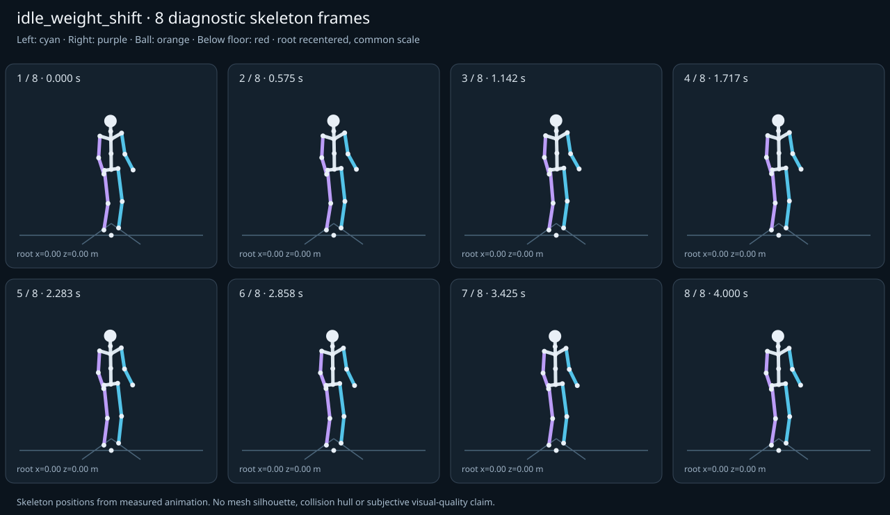

כל הקליפים · תצוגת התנועה · JSON המקור
ציון 99.9 · כיסוי 100%
הסוליות נמדדות בתרחיש תנועה חיצוני מוצהר; Root בנכס נשאר קבוע. הרציפות משתמשת בפוזה המקומית.

| מדד | מצב | ערך | ציון | ראיות |
|---|---|---|---|---|
| החלקת רגליים | ירוק | 0 | 100 | ראיות מקוריות{
"coordinateSpace": "native GLB plus explicitly declared external actor position and heading, applied once",
"supportSource": "declared",
"windows": 2,
"samples": 962,
"maxDriftMeters": 0,
"p95SpeedMetersPerSecond": 0.000001,
"worst": {
"bone": "LeftFoot",
"t": 0.383333,
"start": 0,
"end": 4,
"driftMeters": 0
}
} |
| חדירה לרצפה | ירוק | 0 | 100 | ראיות מקוריות{
"samples": 9620,
"floorY": 0,
"probeKind": "declared sole probes plus skeletal joint centers (no mesh surfaces)",
"maxDepthMeters": 0,
"worst": {
"t": 0.883333,
"bone": "RightFoot",
"depthMeters": 0,
"y": 0
}
} |
| קפיצות פוזה | ירוק | 0.006585 | 99.87 | ראיות מקוריות{
"adjacentPairs": 480,
"observations": 8160,
"maxDegrees60Hz": 0.083701,
"maxMarkerStepHeight60Hz": 0.000263,
"maxRootStepHeight60Hz": 0,
"worst": {
"ratio": 0.006585045877554091,
"t": 1.941667,
"previousTime": 1.933333,
"bone": "RightHand",
"markerStepHeight60Hz": 0.000263,
"degrees60Hz": 0.073112
}
} |
| חריגות אנטומיות | ירוק | 0 | 100 | ראיות מקוריות{
"testedFrames": 481,
"affectedFrames": 0,
"checks": 8177,
"maxLimbFlexionDegrees": 42.999997,
"maxRelativeSegmentLengthChange": 0,
"hingeDirectionChecked": true,
"axialTwistChecked": false,
"violations": []
} |
| מגע בכדור | לא חל | — | — | ראיות מקוריות{} |
| כניסה ויציאה מול המתנה | ירוק | 0.011119 | 99.78 | ראיות מקוריות{
"entry": {
"ratio": 0.01111867082775414,
"t": 0,
"idleTime": 0,
"markers": 17,
"rmsPositionHeight": 0,
"rmsRotationDegrees": 0.000001,
"rmsVelocityHeightPerSecond": 0.008339,
"velocityEvaluated": true
},
"exit": {
"ratio": 0.01111868201132006,
"t": 4,
"idleTime": 4,
"markers": 17,
"rmsPositionHeight": 0,
"rmsRotationDegrees": 0.000001,
"rmsVelocityHeightPerSecond": 0.008339,
"velocityEvaluated": true
},
"worstEndpoint": "exit",
"alignment": "horizontal root translation; raw asset poses used when provided"
} |
| מהירות גוף מול צעדים | לא חל | — | — | ראיות מקוריות{} |
| סימטריה | ירוק | 0 | 100 | ראיות מקוריות{
"mode": "structural",
"modeSource": "declared",
"structuralMismatch": 0,
"segments": [
{
"segment": "Arm-ForeArm",
"mismatch": 0
},
{
"segment": "ForeArm-Hand",
"mismatch": 0
},
{
"segment": "UpLeg-Leg",
"mismatch": 0
},
{
"segment": "Leg-Foot",
"mismatch": 0
}
],
"motionRmsHeight": null,
"worstMotion": null,
"bilateralPoseRmsHeightUnscored": 0.006309,
"note": "One-sided authored actions are checked for structural symmetry only."
} |